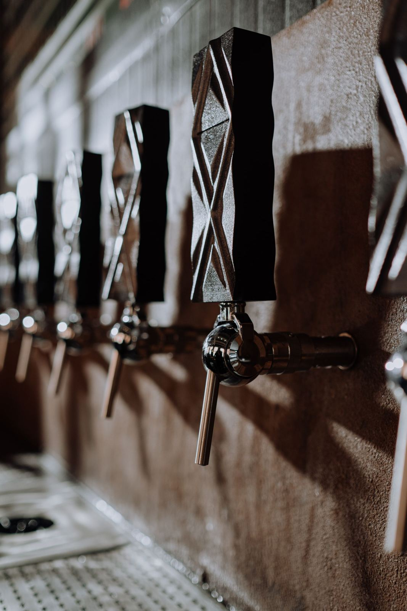

before and after the show
The pre-show hangout
Taps sits near the Westcott Theater, which makes it the natural meeting point: a pint and popcorn before the doors open, a nightcap after the encore. Open daily from 5:00 PM to 11:00 PM.
Taps is a neighborhood bar and grill on Westcott Street pouring craft tap beers and mixing cocktails, with a bowl of popcorn never far away. It is the easy stop before or after a show at the Westcott Theater.

A rotating lineup of craft tap beers, poured properly and served cold.
Real cocktails mixed at a real bar, steps from the theater doors.
The bar serves free-flowing popcorn alongside its craft tap beers.
Taps sits near the Westcott Theater, which makes it the natural meeting point: a pint and popcorn before the doors open, a nightcap after the encore. Open daily from 5:00 PM to 11:00 PM.